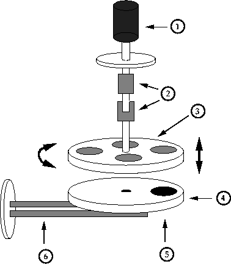

A. Chaiken and E.C. Honea,
Lawrence Livermore National Lab
Livermore, CA 94551
W.S. Rupprecht,
W.S. Rupprecht Consulting
Company
Fremont, CA 94539
S. Torres and R.P. Michel,
Lawrence Livermore National Lab
Livermore, CA 94551
A novel design is presented for a cryogenically cooled multi-substrate sample holder for thin film deposition in high vacuum. The cryogen flows through tubing soldered onto a fixed copper plate, while the substrates are mounted on a separate tray which is supported by a linear/rotary-motion feedthrough. By lowering the substrate tray into firm contact with the copper plate, we can achieve substrate temperatures as low as 120 K.
A common difficulty in the mechanical design of high vacuum systems is reconciling rotary or linear motion of a sample with simultaneous heating or cooling. While there are commercially available solutions to this problem for a single substrate, the difficulty is compounded when the user wants to manipulate multiple heated or cooled samples without breaking vacuum.
Substrate cooling is necessary in order achieve sharp compositional gradients in multilayer films composed of reactive materials. For example, multilayer films composed of Fe and Ge which were deposited onto nominal room temperature substrates were found to be non-magnetic and poorly layered.[1] On the other hand, the deposition of several multilayers without breaking vacuum is highly desirable for reasons of reproducibility. In our design, the sample holder has been split into two parts in order to accommodate both substrate cooling and the interchange of multiple substrates: a stationary tray to which cooling lines are brazed, and a moving tray on which the multiple substrates are mounted. In order to cool a substrate, the moving tray is pressed firmly against the stationary tray, and liquid nitrogen is allowed to flow through the cooling lines. When the deposition is finished, the user can change substrates by raising the moving tray and then rotating to the new substrate position. The moving tray is then lowered with the new substrate in place over the aperture in the stationary tray.
A schematic drawing of the system is shown in Figure 1. The stationary tray is supported by aluminum rods (not shown). In order to provide maximum thermal isolation for the two trays, the support rods are insulated from the stationary tray by ceramic washers and the moving tray is connected to the universal joint via a teflon rod. On the underside of the stationary tray, a thermocouple attached to a ceramic post presses against the moving tray through a hole in the stationary tray. This thermocouple provides an approximate measurement of the substrate temperature. Another thermocouple (not shown) is mounted on the stationary tray itself.
Experience has shown that the stationary tray reaches a temperature of 100K after running liquid nitrogen for 35 minutes, while the moving tray reaches a final temperature of 120K after 45 minutes. This cooling is adequate to allow deposition of Fe/Ge multilayers with good magnetic and structural properties.[1]
Part of this work was performed under the auspices of the U.S. Department of Energy by LLNL under contract No. W-7405-ENG-48.
1. A. Chaiken and R.P. Michel, unpublished.

Figure 1: Schematic drawing of the
cryogenically cooled multiple substrate holder. The major
components are: 1) the linear/rotary motion feedthrough; 2)
the universal joint which allow rotary motion around
orthogonal axes, making thermal contact of the plates
insensitive to their relative alignment; 3) the moving
substrate tray; 4) the stationary cryogenically cooled tray;
5) the aperture in the stationary tray through which
deposition occurs; and 6) the cryogen lines. Both the motion
and cryogen feedthroughs are mounted on 2 3/4" copper-gasket
flanges. The material is OFHC copper for the trays and the
cooling lines. The universal joints and support rods
connecting them are made of aluminum except for one support
rod which is made of teflon in order to maximize thermal
isolation.